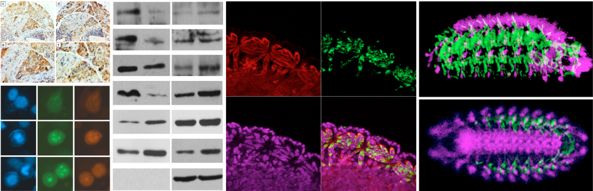

2016
- Ma Y, Wang L, Neitzel LR, Loganathan SN, Tang N, Qin L, Crispi EE, Guo Y, Knapp S, Beauchamp E, Lee E, Wang J. The MAPK pathway regulates intrinsic resistance to BET inhibitors in colorectal cancer. Clin Cancer Res. 2016 Sep 27. pii: clincanres.0453.2016. DOI: 10.1158/1078-0432.CCR-16-0453.
- Candas D, Qin L, Fan M, Li JJ. Experimental approaches to study mitochondrial localization and function of a nuclear cell cycle kinase, Cdk1. J. Vis. Exp. (108), e53417, doi:10.3791/53417, (2016).
2015
- Qin L, Fan M, Candas D, Tian L, Woloschak G, Grdina D, and Li JJ. CDK1 Enhances Mitochondrial Bioenergetics for Radiation-Induced DNA Repair. Cell Rep. 2015, 13(10), 2056-63.
- Liu R, Fan M, Candas D, Qin L, Zhang X, Eldridge A, Zou JX, Zhang T, Juma S, Jin C, Li RF, Perks J, Sun L, Vaughan AT, Hai C, Gius D, Li JJ. CDK1-mediated SIRT3 Activation Enhances Mitochondrial Function and Tumor Radioresistance. Mol Cancer Ther. 2015, 14(9), 2090-2102.
- Cui Y, Qin L, Wu J, Qu X, Hou C, Sun W, Li S, Vaughan AT, Li JJ, and Liu J. SIRT3 enhances glycolysis and proliferation in SIRT3-expressing gastric cancer cells. PLoS One. 2015, 10(6), e0129834.
- Jin C, Qin L, Shi Y, Candas D, Fan M, Lu CL, Vaughan ATM, Shen R, Wu LS, Liu R, Li RF, Murley JS, Woloschak G, Grdina DJ, and Li JJ. CDK4-mediated MnSOD activation and mitochondrial homeostasis in radioadaptive protection. Free Radic. Biol Med. 2015, 81, 77-87.
- Lu CL, Qin L, Liu HC, Candas D, Fan M, and Li JJ. Tumor Cells Switch to Mitochondrial Oxidative Phosphorylation under Radiation via mTOR-Mediated Hexokinase II Inhibition - A Warburg-Reversing Effect. PLoS One. 2015, 10(3), e0121046.
2014
- Wang Z, Fan M, Candas D, Zhang TQ, Qin L, Eldridge A, Wachsmann-Hogiu S, Ahmed KM, Chromy BA, Nantajit D, Duru N, He F, Chen M, Finkel T, Weinstein LS, and Li JJ. Cyclin B1/Cdk1 coordinates mitochondrial respiration for cell-cycle G2/M progression. Dev Cell. 2014, 29(2), 217-32.
2009
- Qin L, Tong T, Song Y, Xue L, Fan F, Zhan Q. Aurora-A interacts with Cyclin B1 and enhances its stability. Cancer Lett. 2009, 275(1), 77-85.
2008
- Yang Q, Gu J, Du L, Jia L, Qin L, Wang Y, Fan F. ShRNA-mediated Ku80 gene silencing inhibits cell proliferation and sensitizes to γ-radiation and mitomycin C-induced apoptosis in esophageal squamous cell carcinoma lines. J Radiat Res. 2008, 49(4), 399-407.
- Qin L, Fan F, Zhan Q. The role of Cyclin B1 in cell cycle regulation and in development and progression of tumor. Journal of Medical Research 2008, 37(1), 8-10.
2006
- Wang D, Chen J, Qin L, Zhang C. Development of enzyme-linked-immunosorbent assay for cardiac troponin-I (cTn-I). Biomedical Engineering and Clinical Medicine 2006, 10(3), 185-87.
- Wang D, Zhang C, Yang F, Chen J, Qin L, Jin Y, Han P. The Preparation of Enzyme-linked Immunosorbent Assay (ELISA) Kit for Serum Testosterone. China Preventive Medicine 2006, (2).
- Wang D, Chen J, Qin L, Zhao B, Zhang C. Establishment of Colloid Gold Immunity Chromatography Assay for Cardiac Troponin-I (cTn-I). Chinese Journal of Radiological Health 2006, 15(2), 156-57.
2005
- Qin L, Zhang C. The research progress and medicine application of the scFv antibody. Foreign Medical Sciences (Section of Radiation Medicine and Nuclear Medicine) 2005, 29(6), 255-57.